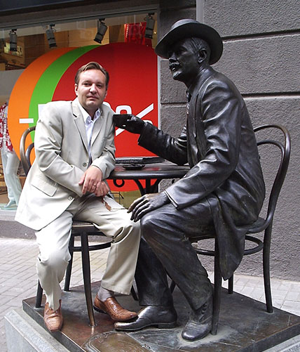

Metro UI CSS
创建 Windows8 风格样式！
Metro UI CSS 可以快速创建Windows 8风格的网站而无需其它工作。
开始：引用modern.css
< link href="modern.css" rel="stylesheet" />
作者广告位招租
每天有1000+ 多的访问
广告位置1
广告位置2

简约

丰富
响应式

嗯，没错，上面这就是作者。大叔级人物了。这是它的地址 Kiev，乌克兰
欢迎使用
Metro UI CSS拥有完整的解决方案，可以创建 Windows 8 Metro 风格网站的前端框架
Metro UI CSS 包含两种开源许可证：MIT 和 Commercial
Less
Metro UI CSS 使用 LESS (一种CSS预处理器) 来构建， LESS是发明的。它让开发CSS变得更快，更简单，也更加有趣。
支持的浏览器
所有的现代浏览器，IE9+，Firefox，Chrome，Safari，Opera等……
GitHub 项目:
| Starred: | 894 |
| Forks: | 188 |